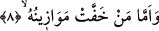

kelimesinin çoğuludur. Mevzûn, Allah Teâlâ’nın nezdinde ağırlığı ve değeri olan amel
demektir. Bu kelime, “mîzân” (terazi) kelimesinin çoğulu da olabilir. O zaman amellerin
ağırlığı demek, kefenin ağır basması demektir. Çünkü hak ağırdır, bâtıl ise hafiftir.
Kelimenin çoğul olması ise amellerin büyüklüğünü vurgulamak veyâ her mükellefin
kendisine âid bir mîzânı olduğu ya da tartılan şeyler farklı farklı ve çok olduğu içindir.
İbn Abbas der ki: Burada bahsedilen, bir dili ve iki kefesi olan bir terazidir. Bununla
ancak ameller tartılır. Allah (c.c.), kulların durumlarını, onların kendi aralarında
alışageldikleri şeylerle beyân etmek için bu kelimeyi kullanmıştır.
Derler ki: İnsanların amel defterleri, adâleti izhâr etmek ve onların bahanelerini
kesmek için o terâzilere konur. Veya araz hâlindeki ameller, onlara münâsip güzellik ve
çirkinlikte cevher sûretinde ortaya çıkar. Sâlih ameller güzel bir sûrette, kötü ameller
ise çirkin bir sûrette getirilir ve terâziye konur. Yâni kimin iyiliklerinin ağırlığı terâziyi
bastırırsa,
7. İşte o, hoşnut edici bir yaşayış içinde olur.
“Hayatın hoşnut olması” deyimi, bir şeyin sebebe isnâdı kabilindendir. Çünkü hayat,
o hayatı bahşeden Yaratıcıdan râzı olmanın sebebidir. Bazı âlimler şöyle der: Râzı ve
hoşnud hayat demek, sâhibinin hayatından memnûn olması demektir. Bu husustaki
açıklama daha önce “el-Hâkka” sûresinde geçmişti.
et-Te’vîlâtü’n-Necmiyye’de şöyle denilir: Kimde ilâhî vasıflar ve lâhûtî ahlâk ağır
basarsa, o kişi bu vasıfların ve ahlâkın neticeleri husûsunda rahat ve istirahat içinde
olur.
8. Ameli yeğni olana gelince,
“Kimin de” mûteber addedilecek haseneleri olmaması veya kötü amelleri güzel
amellerine baskın gelmesi sebebiyle “Tartıları hafif gelirse”...
İbn Mes’ûd dan şöyle rivâyet olunuyor: “İnsanlar kıyamet günü hesâba çekilirler.
Kimin güzel amelleri kötü amellerinden bir fazla çıkarsa o Cennete girer. Kimin de kötü
amelleri güzel amellerinden bir fazla çıkarsa o da Cehenneme gider.”